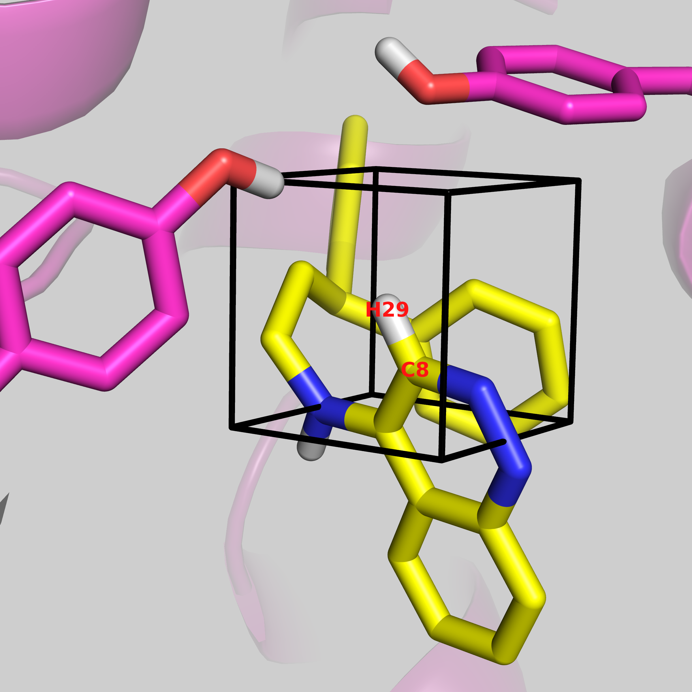
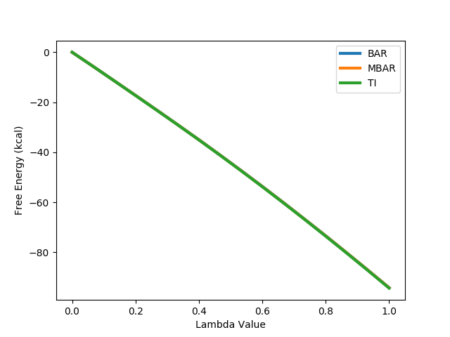
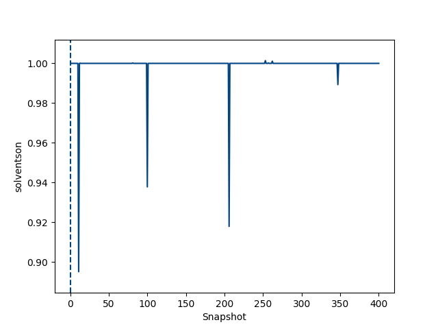
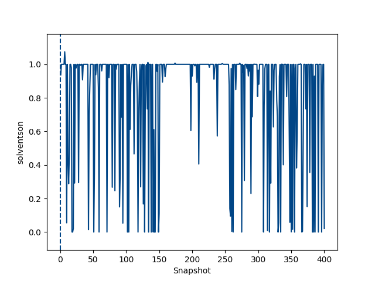
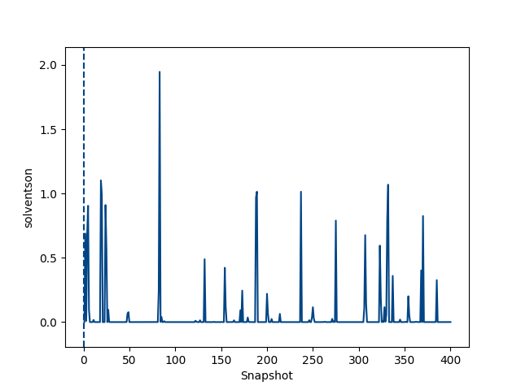

To come back to the tutorial index, click here.
ONE.pdb - the structure of the first ligand molecule in PDB formatTHR.pdb - the structure of the second ligand molecule in PDB formatprotein_scoop.pdb - the structure of the SD protein in PDB format
python2.7 $PROTOMSHOME/tools/make_gcmcbox.py -b 26.1 13.2 34.9 -p 2.
26.1 13.2 34.9 is the centre of the box, with a padding of 2 Å around the center. Other options are possible, setting up the box around a given ligand, or with varying dimensions of the box. To explore the options of the make_gcmcbox.py script, use the -h flag. Note the output of this script.
Volume of GCMC box: 64.0 Bequil: -9.71
This is telling us the volume of the GCMC box is 64.0 ų. The Bequil is the Adams' value at which we need to simulate to correspond to equilibrium with bulk water. This is calculated using:
Bequil = βμ' + ln(Vgcmc/Vo)
Where β is thermodynamic beta, β' is the excess chemical potential of the water model. Vgcmc is the volume of the GCMC region (64.0 ų here) and Vo is the volume of a single water molecule in bulk (30.0 ų here). More details of these can be found in the publications at the bottom of the page.
It is a good idea to visualise this, even before all of the system is set up, to get an idea that the GCMC box is where you expect it to be.
vmd -m ONE.pdb THR.pdb protein_scoop.pdb gcmc_box.pdb
python $PROTOMSHOME/protoms.py -s gcap_single -sc protein_scoop.pdb -l THR.pdb ONE.pdb --gcmcbox gcmc_box.pdb --adams -9.71
gcap_single informs protoms that we are performing a single-topology GCAP simulation. -sc protein_scoop.pdb is the pre-generated protein file appropriate for simulation. -l THR.pdb ONE.pdb are the two ligands that we are comparing. For single topology, the larger ligand needs to be written first, and protoms will throw an error if the first ligand is smaller. The --adams -9.71 tells protoms what Adams' value to simulate it. This is the value that was output using the make_gcmcbox.py script earlier. This will change depending on the volume of the GCMC box. --gcmcbox gcmc_box.pdb is the GCMC box file that we generated previously. If this flag is not used, and there is no gcmc_box.pdb file in the directory, protoms will set up a GCMC box, that will cover the entire ligand, with a padding of 2 Å. ProtoMS will try work out the atom mapping between the two ligands, but for the C-H group that is being perturbed, user input is required. You will see:
These are the distances (A):
C8 H29
N19 0.000 1.078
Enter the corresponding atom for C8:
Type in N19 and press enter. Atoms C8 of ligand THR.pdb, and N19 of ONE.pdb are 0.000 Å apart. Next you will see:
Enter the corresponding atom for H29:
Now there is no atom in ligand ONE.pdb that corresponds to this, so we want to perturb it to a dummy atom. Press enter, and protoms will complete its single-topology set up. This will generate several files, including a water.pdb and a water_clr.pdb file. The water_clr.pdb will be used in the simulation, as it has had any bulk water removed from inside the specified GCMC region. Various .cmd files are generated, which contain the simulation details. These will be for a two-step simulation, where the electrostatics and van der Waal's interactions are perturbed seperately, and comb files, where both are perturbed simultaneously. There are files generated for a gas phase, bulk solvent phase, and protein bound phase of each of these. These can be run using the following command.
mpirun -np 16 $PROTOMSHOME/protoms3 run_comb_free.cmd mpirun -np 16 $PROTOMSHOME/protoms3 run_comb_gcap.cmd
This is most conveniently done on a computer cluster. The calculations will take approximately 12 h to complete. The gas phase simulations are required to calculate the relative free energy of solvation (see the tutorial on calculating relative free energy of solvation for details XXXXlink to relative free energyXXXX) and will not be looked at here. Here, only the comb simulations will be analysed, but feel free to simulate the vdw and ele simulations too.
python $PROTOMSHOME/protoms.py -s gcap_dual -sc protein_scoop.pdb -l THR.pdb ONE.pdb --gcmcbox gcmc_box.pdb --adams -9.71This time you will not be asked for any user input, and only two files will be generated.
run_free.cmd and run_gcap.cmd. Again, run using the following command.
mpirun -np 16 $PROTOMSHOME/protoms3 run_free.cmd mpirun -np 16 $PROTOMSHOME/protoms3 run_gcap.cmdAs there are two copies of the ligand, these simulations are slower, and will take approximately XXX hours.
python $PROTOMSHOME/protoms.py -s gcap_single -sc protein_scoop.pdb -l THR.pdb ONE.pdb --gcmcbox gcmc_box.pdb --adamsrange -17.71 -8.71 10This is the same command as before, and will run through the same set up as before, but now instead of using the
--adams flag with the equilibrium B value, now we have used --adamsrange.
protoms.py set up), the free leg needs to be subtracted from the bound leg.
python $PROTOMSHOME/tools/calc_dg.py -d out_comb_free -l 0.25 --pmf --estimators mbar python $PROTOMSHOME/tools/calc_dg.py -d out_comb_gcap -l 0.25 --pmf --estimators mbarTry the above commands with a combination of 'ti', 'bar' and 'mbar' and see how consistent the different methods are.
MBAR
out_comb_free -90.18
out_comb_gcap -94.20
The free energy values are very large, but the bound minus the free leg corresponds to a free energy difference of -4.0 kcal mol-1. This is in very good agreement with the experimental value of -3.8 kcal mol-1.
The pmf of the free energy can be calculated using TI, BAR and MBAR, and are plotted below. All three are shown, but as they are very consistent, only one is visible, with the other two perfectly behind. As the profiles are both smooth and consistent, this indicates that the perturbation is converged.

While this good experimental agreement is promising, it is useful to understand where the favourable energetics that make ligand ONE higher affinity than ligand THR come from, as this can be useful for SAR information and drug design.
python $PROTOMSHOME/tools/calc_ti_decomposed.py -b out_comb_gcap -d out_comb_free -l 0.25The
-b flag shows what is the bound leg, and -d flag indicates the free leg of the simulation. This will calculate the free energy difference of ligand THR and ONE by each energetic contribution.
FDTI: -4.234 +- 0.000
protein1-thr1_COU: -2.926 +- 0.000
protein1-thr1_LJ: -0.339 +- 0.000
thr-GCS_COU: -2.983 +- 0.000
thr-GCS_LJ: -0.517 +- 0.000
thr-solvent_COU: 1.102 +- 0.000
thr-solvent_LJ: 0.316 +- 0.000
thr_ANG: 0.077 +- 0.000
thr_BND: -0.001 +- 0.000
thr_DIH: -0.000 +- 0.000
thr_NBC: 0.812 +- 0.000
thr_NBL: 0.224 +- 0.000
sum of terms: -4.235 +- 0.000
The top-most and bottom-most numbers show the free energy perturbation for the bound and free leg combined, calculated from the total energy, and the sum of all individual energies respectively. The relative free energy is 0.2 kcal mol-1 different calculate by TI than MBAR. Three of the contributions contribute over 1 kcal mol-1, protein1-thr1_COU, thr-GCS_COU and thr-solvent_COU.
First considering protein1-thr1_COU, this shows that the coulombic interaction between ligand ONE and the protein is 3 kcal mol-1 more favourable than ligand THR, which is a large energetic contribution for the pertubration of a few atoms.
The other contributing energetic contributions are the interactions between the ligand and water. thr-solvent_COU shows an unfavourable 1 kcal mol-1 contribution to the free energy when ligand THR is perturbed to ligand ONE. The other energy, thr-GCS_COU, shows a 3 kcal mol-1 FAVOURABLE contribution for the same perturbation. The thr-GCS_COU energy is the free energy difference between the ligand and the grand canonical solute (the GCMC water molecule), which are the water molecules that are placed within the GCMC region throughout the simulation. This shows that ligand 1 has a much more favourable interaction with water in the 64.0 Å3 GCMC region set up at the beginning. So lets look at what this means.
GCMC attempts to insert and delete water molecules within the defined region, throughout the simulation. This allows the water molecule to be inserted or displaced, according to the equilibrium state of the protein-ligand complex.
Now lets look at the sampling of the GCMC water molecule at different λ values.
python $PROTOMSHOME/tools/calc_series.py -f out_comb_gcap/lam-0.000/results -s solventson python $PROTOMSHOME/tools/calc_series.py -f out_comb_gcap/lam-0.533/results -s solventson python $PROTOMSHOME/tools/calc_series.py -f out_comb_gcap/lam-1.000/results -s solventsonThis will show the water occupancy of the GCMC box through the simulation for the two ligands; ONE, and intermediate ligand between ONE and THR, and ligand THR.
  
This shows that the water occupancy with ligand ONE is one, and ligand THR is zero, although this value samples due to the insertion and deletion moves. For the intermediate ligand, the water occupancy exchanges frequently, and samples both occupancies well.
This can be visualised by taking a bit of each simulation and stitching it together to view as a trajectory. This can be done using the command below.
for file in out_*/lam-*/all.pdb ; do sed "/MODEL 31/q" $file >> simulation.pdb; doneFor a longer or shorter trajectory, increase or decrease the number following MODEL. pymol can handle the trajectory as it is, but vmd needs a constant number of water molecules in each frame to read in the trajectory.
python ../../tools/make_gcmc_traj.py -i simulation.pdb -o vmd_simulation.pdb -n 2 vmd vmd_simulation.pdbWhere
-n is the maximum number of water molecules expected, which has been determined from the solventson plots above.
This trajectory should show the perturbation from ligand THR to ligand ONE, with the C-H group shrinking in. The carbon atom will be perturbed to a nitrogen, but as it is the atom parameters and not the atom name that is updated, the atom does not appear to change to nitrogen. This trajectory should show that as the group is shrunk, the GCMC water molecule (resname WA1) inserts as the group becomes smaller.